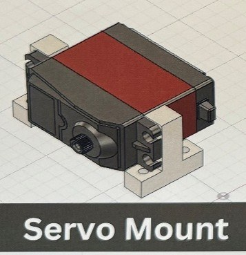
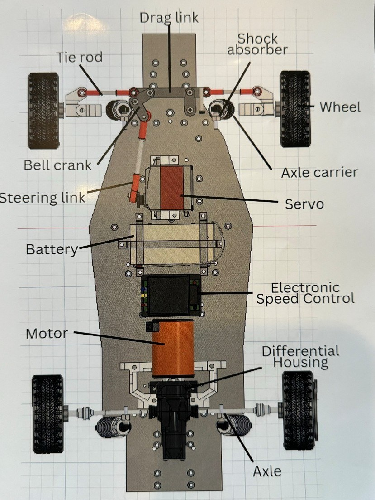

Goal
The goal was to build an RC drift car from scratch. I modified a free Mustang mesh into a body shell, split it into four printable sections, designed a custom spoiler, and developed a CNC-machined aluminum chassis/electronics housing.
What happened
The project was not fully assembled because the build exceeded the available budget. More importantly, I spent too much time trying to force a mesh-based workflow to do things that would have been easier with simpler geometry, and I did not ask for help early enough.



Why I kept it
This project is useful to show because it demonstrates a real engineering failure mode: a technically interesting approach can still be the wrong approach for the constraints. The experience improved how I evaluate CAD workflows, project scope, and when to change direction.